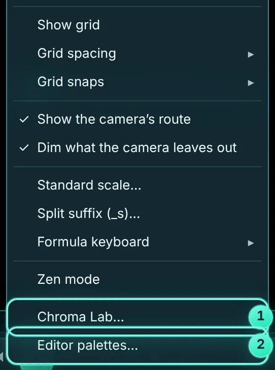
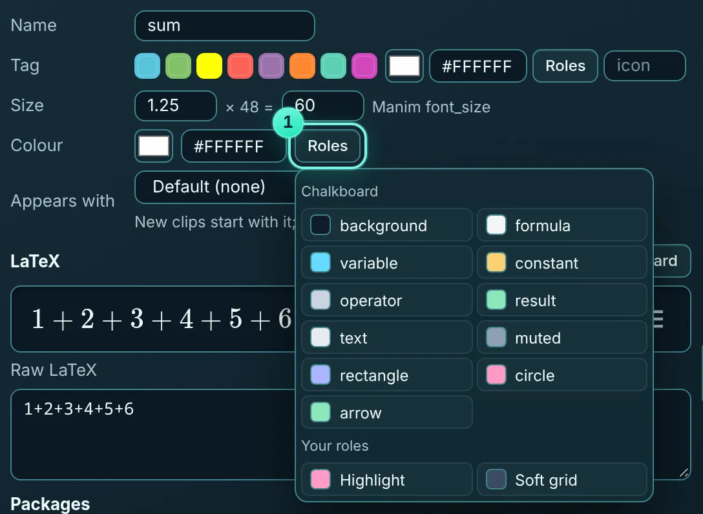
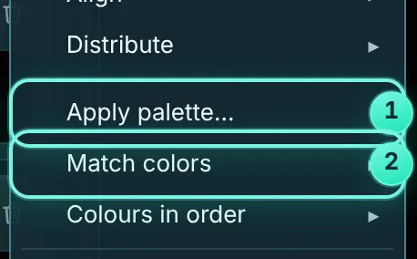
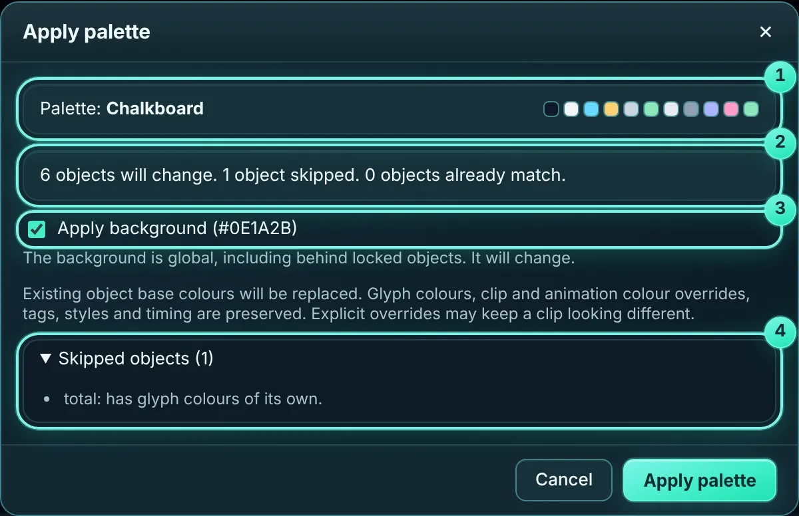
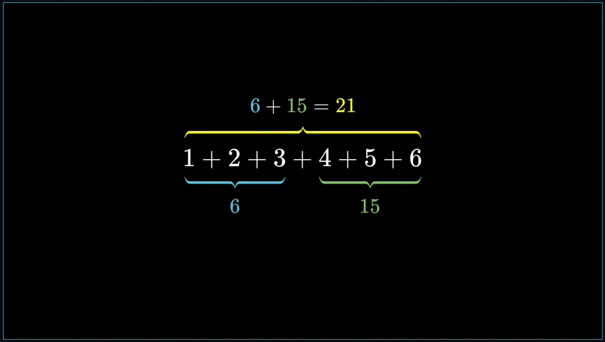
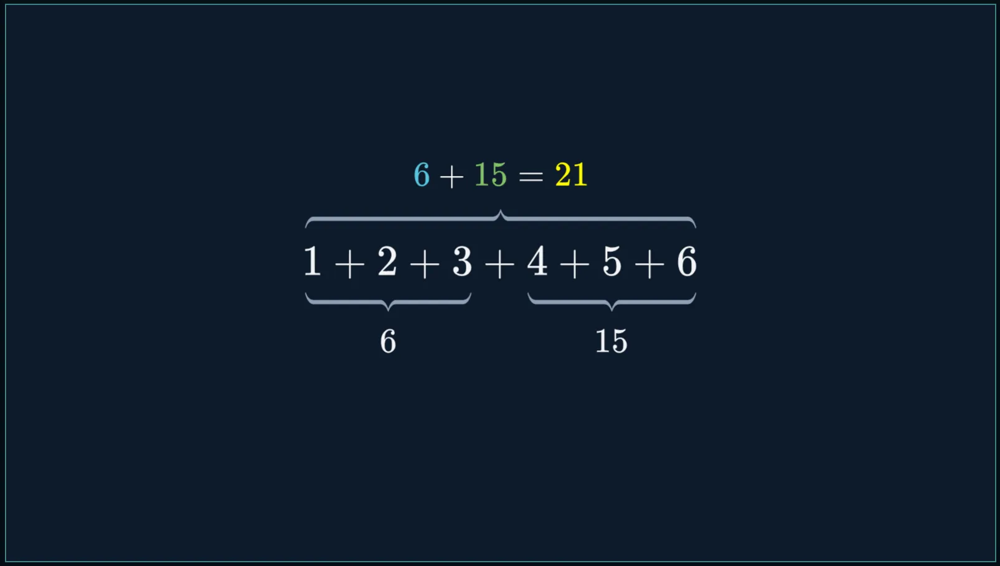
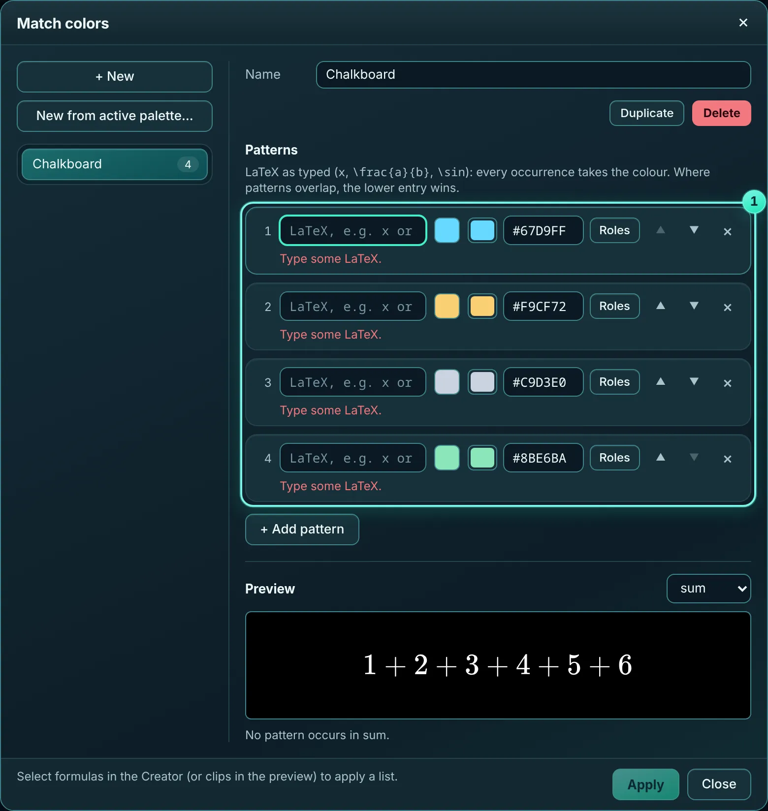
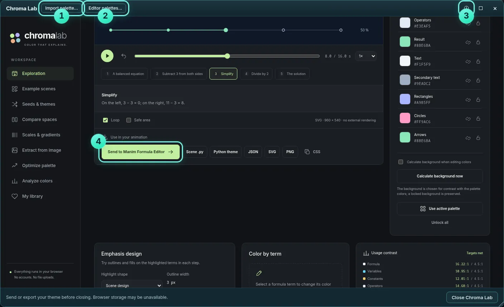
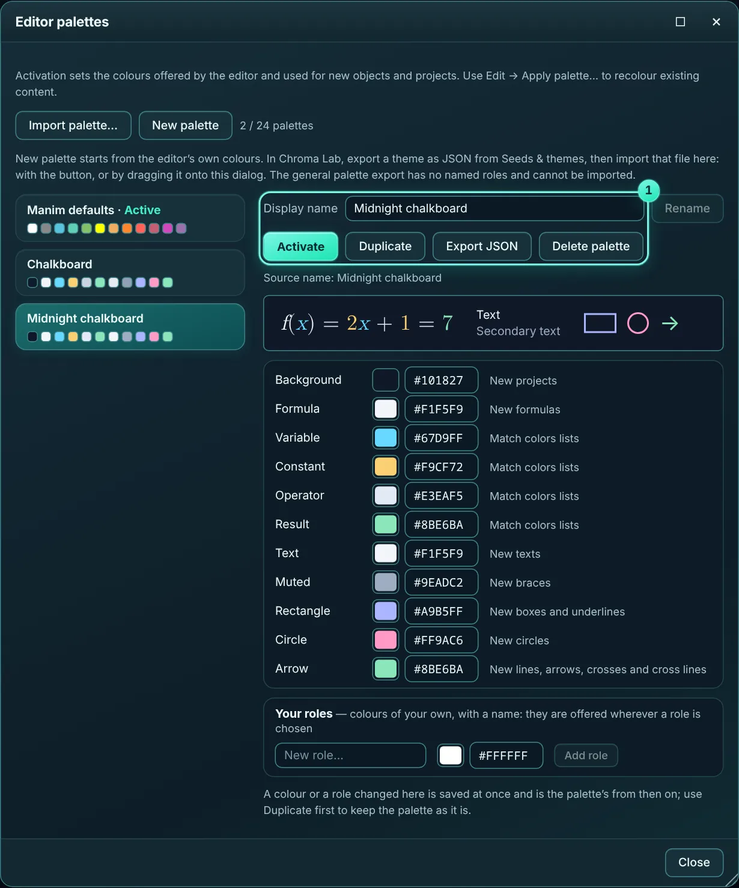

Palettes by role and Chroma Lab
A palette gives your colours names: one for the background, one for formulas, one for variables, and so on. You make it once, and the editor uses it for what you create from then on. Chroma Lab, the colour studio inside the app, designs whole palettes for you.
What a palette is
A palette is a set of eleven roles, each with a colour. Every palette has all eleven, and the editor knows what to do with most of them:
| Role | What the editor does with it |
|---|---|
background | The background of a new project. |
formula | The colour of a new formula. |
variable, constant, operator, result | The colours of a Match colors list made from the palette. They are also offered wherever you choose a colour. |
text | The colour of a new text. |
muted | The colour of a new brace. |
rectangle | The colour of a new box, highlight or underline. |
circle | The colour of a new circle. |
arrow | The colour of a new cross, cross line or line. |
You can add roles of your own to a palette: a name and a colour, such as Highlight. Nothing takes them by itself. They are offered wherever you choose a colour by role.
Making a palette
Choose Preferences ▸ Editor palettes…. The dialog holds up to 24 palettes. New palette starts one from the colours the editor uses without a palette, Import palette… reads a theme file, and Duplicate copies the one selected.

To make one:
- Press New palette. It appears selected, and not yet active.
- Give it a name in Display name and press Rename.
- Change a role: type a hex value in its field and press Enter, or use the picker beside it. The sample above the roles shows the palette at work on its own background.
- Under the eleven roles, Your roles adds roles of your own: type a name, choose a colour and press Add role (or Enter in the name).
- Press Activate.
A colour is saved as soon as its field is accepted. There is no draft and no undo, so Duplicate a palette first if you want to keep it as it is. A role of your own is renamed and recoloured in place and removed with Delete; a palette holds up to 24 of them.
Export JSON writes the palette to a file named after it. The file is the same palette when you import it again, here or in Chroma Lab. Your own roles travel in a field of their own, customRoles, beside the eleven colors.
Using a palette
Activate makes a palette the one the editor works with, marked Active in the list. From then on:
- New projects start with its
background, and new objects with the colour of their role (the table above). - Colour fields show a Roles button beside their hex box, and the swatches of a colour menu are followed by the roles.
- A colour you change in the active palette applies from then on, with no need to activate it again.
Nothing that already exists changes, and activating adds no undo step. To go back, select Manim defaults in the list and press Use Manim defaults. Deleting the active palette does the same, and the objects keep their colours.
The Roles button opens every role as a block with its name beside its colour, and your own roles under Your roles. Choosing one puts its colour in the field. The swatches of a menu keep the names in their tooltips.

Recolouring what exists
Edit ▸ Apply palette… recolours the objects of the project with the role of their kind. The entry is off until a palette is active. The dialog shows what would change before anything does.


- Each object takes the colour of its role: a formula its
formula, a brace itsmuted, and so on. - Apply background also sets the background of the scene, behind everything, locked objects included. You can leave it off.
- An object is skipped, with its reason in the list, when it is used on a locked track, or when it has glyph colours of its own. Glyph colours, the colours that clips and animations override, tags, styles and timing are never touched.
- The whole change is one undo step. If the project or the palette changes while the dialog is open, it asks you to review a fresh preview first.


Roles and Match colors
The roles variable, constant, operator and result are for the glyphs of an equation. The editor cannot tell which glyph is a variable, so you say it with patterns. Edit ▸ Match colors ▸ New from active palette… makes a list of four rows coloured with those roles, and leaves the patterns empty for you to fill. It colours nothing by itself.

Chroma Lab
Chroma Lab is the editor's colour studio. It generates palettes from harmonies and seeds, keeps roles linked, checks their contrast against the scene's background, extracts colours from an image and tries a palette on animated scenes. It comes inside the app and works offline: open it with Preferences ▸ Chroma Lab…. You do not need it to use palettes, but it is the quickest way to a good one.

A theme reaches the editor's palettes in two ways, and nothing is written to your project in either:
- Send. Send to Manim Formula Editor, under
Use in your animation
in Exploration and beside JSON in Seeds & themes, puts the theme in the palettes and opens Editor palettes on it, ready to activate. Sending the same theme again finds the entry it made; a changed one makes another, named like the first with (2). - File. Save the theme with JSON in Chroma Lab, then use Import palette…, in the title bar of the dialog or in Editor palettes. You can also drag the file onto either dialog.

The ⓘ button in the title bar says this again, and links to the notices of Chroma Lab. The general Export palette file of Chroma Lab has no named roles, and the editor cannot import it.
A palette that you edit in the editor, adding roles of your own, is not sent back. If you send the theme from Chroma Lab again, it arrives as a new palette without your roles.
Chroma Lab is a part of the editor that has a repository of its own, and it also opens alone from there. Getting the app running tells how the two fit together.
Try a palette on a scene
The widget at the top of the page recolours a short derivation with the roles of a palette: pick a palette, and every glyph takes the colour of its role. A palette that looks good on a swatch row can look very different on a scene, so look at it on one before you activate it. The project below is that derivation: download it, choose File ▸ Open…, press Other file… and pick it, to try a palette of your own on it.
Where to go next
- Match colors turns the four glyph roles into colours on your formulas.
- Colouring glyphs and objects covers colours by hand.
- Preferences lists every preference of the editor.